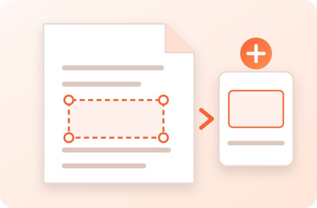

Select one or more regions on a PDF page, rotate or reshape the selection, and export raster JPG, PNG or WebP images. The displayed dimensions and DPI reflect any browser-safe output cap.
The page remains a preview until download. Exporting creates a new raster image, so inspect fine lines and text at the intended use size.

PDFdukan's Crop PDF tool lets you draw a box over part of the current PDF page and export that region as a JPG, PNG or WebP image. Instead of converting a whole page, you can keep one map area, stamp, plan detail or figure. Processing uses client-side PDF.js; the page can still request ordinary site assets, analytics and third-party libraries.
Cropping a smaller region can allow more output pixels than rendering an entire oversized page, but it cannot recover detail that is absent from the source. The tool automatically lowers the requested scale if an output would exceed its 8,000-pixel or 64-megapixel safety limits.
The selected region is rendered from the PDF at the chosen scale, subject to the displayed browser-safe output cap.
Pull one area out of a huge GIS map or site plan that's otherwise too large to convert in full quality.
PNG uses lossless image encoding; JPG and WebP use the selected quality. File size varies by content.
The selected PDF is opened and rendered locally with PDF.js rather than uploaded for server processing.
Start with PNG and a moderate resolution for text or line art, then inspect the pixel dimensions and detail. A smaller region may allow a higher render scale, but output is capped for browser stability and cannot restore detail missing from the PDF.
Very large pages (like 96×96 inch maps) are too big to render at high DPI in one go — browsers cap how large a canvas can be, so the full page is limited to a safe size. Cropping renders only your selected region, so that part can be captured at a much higher resolution and far more detail.
Yes. Each crop box has a rotation handle (the dot above the top edge) — drag it to rotate to any angle, or use the 90° buttons for quick quarter-turns. The exported image is rotated to the angle you selected; inspect the preview and fine-tune the handle when exact alignment matters.
Yes. Click ➕ Add crop to place additional boxes on the same page, position each one independently, then use Download all (ZIP) to get every region as a separate high-quality image in one ZIP file.
Yes. Use the 🔍 zoom buttons to enlarge the page — it re-renders sharp at higher resolution (not a blurry stretch), so you can place the crop box precisely on fine map detail. Your selections stay in place as you zoom in and out.
The selected PDF is opened and rendered by client-side PDF.js rather than sent to PDFdukan for crop processing. The page can still load normal site assets, analytics and third-party libraries.
PNG uses lossless image encoding and supports transparency; JPG uses lossy compression and a white background; WebP supports transparency and uses the selected quality in this tool. No format is always smallest, so compare output bytes and visible detail.
No. This tool does not request or bypass passwords. Use software authorized to open the file and save an unprotected copy first. PDFdukan's Restriction Check is only a compatibility re-save for supported unencrypted PDFs.
The interface is responsive and pointer controls support touch. Large pages and high-resolution crops may exceed a phone's available memory, so use a smaller selection or lower resolution if processing fails.
Use the PDF to JPG converter to turn every page into an image and download them all as a ZIP.
Connect Google Drive to save selected outputs to your own Drive storage. Review the destination before uploading sensitive documents.
No account? Sign Up free